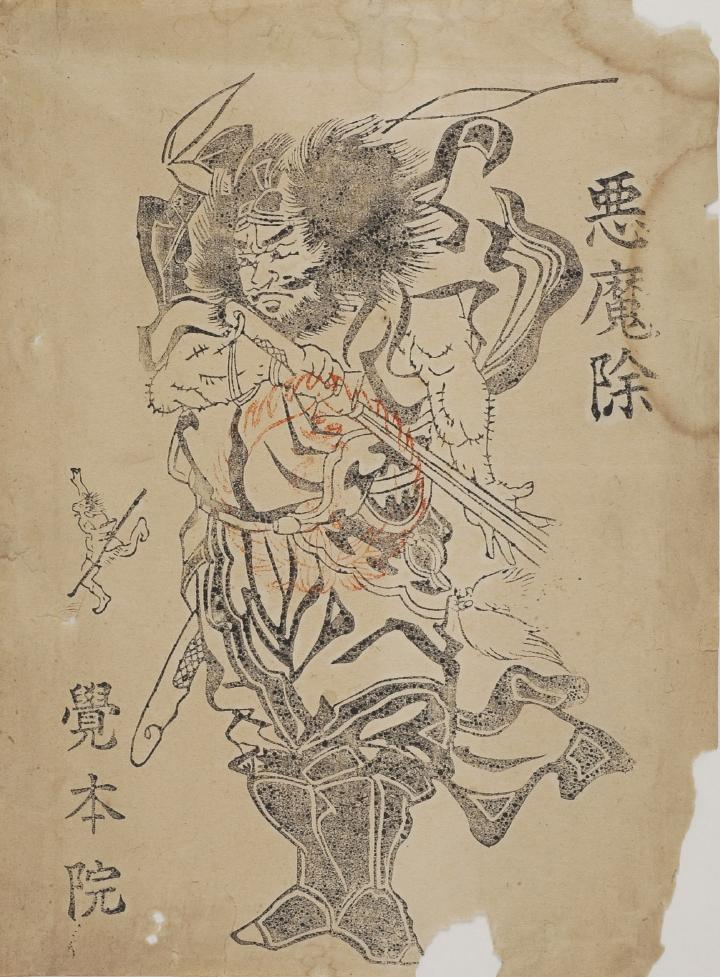

悪魔；アクマ，鐘馗；ショウキ

鐘馗が、勇ましく刀を振り払っている姿が描かれている。画面左部に、逃げ去る化物の後ろ姿が小さく描かれている。
出典：親書誌：U426_nichibunken_0037：悪魔除；アクマヨケ／日付：2006／資源識別子：U426_nichibunken_0037_0001_0000
Copyright (c)2010- International Research Center for Japanese Studies, Kyoto, Japan. All rights reserved.